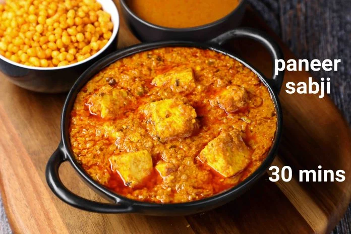

Paneer butter masala

Description
Paneer butter masala is a delicious rich and creamy vegetarian Indian curry. This recipe is easy to make at home in just 30 minutes with cubes of paneer, onions, cashews, and Indian spices in a buttery tomato sauce.
Ingredients
- 15 cube cottage cheese
- Spices:
- ginger paste
- ground red chiles
- cumin
- garam masala
- cardomom
- salt
- 2 tablespoons butter
- 1 tablespoon ground cashews
Steps
- Heat oil in a large skillet over medium heat; fry paneer in batches until golden, about 5 minutes.
- Melt butter in the same skillet over medium heat; cook and stir onion until golden brown, about 10 minutes.
- Add ginger paste and garlic paste. Continue to cook until fragrant, about 1 minute more.
- Stir cashews, ground red chiles, cumin, coriander, and garam masala into the onion mixture. Cook and stir for 1 minute.
- Stir tomato sauce, half-and-half, milk, sugar, and salt into spice mixture; simmer until thickened, about 5 minutes.
- Reduce heat to low. Add fried paneer and simmer until heated through, about 5 minutes more.
Home